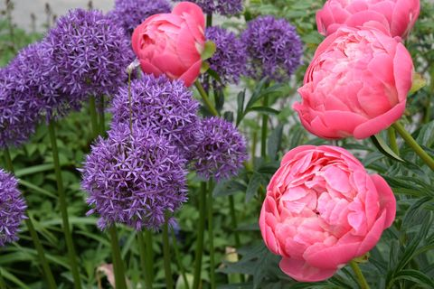
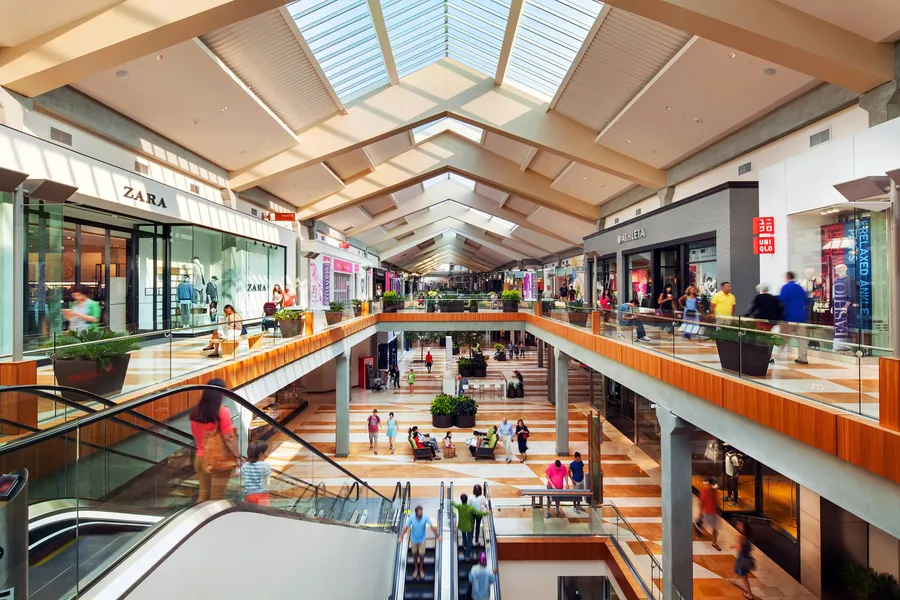
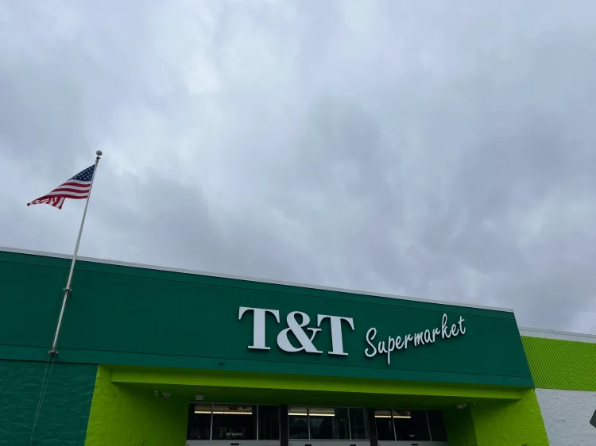
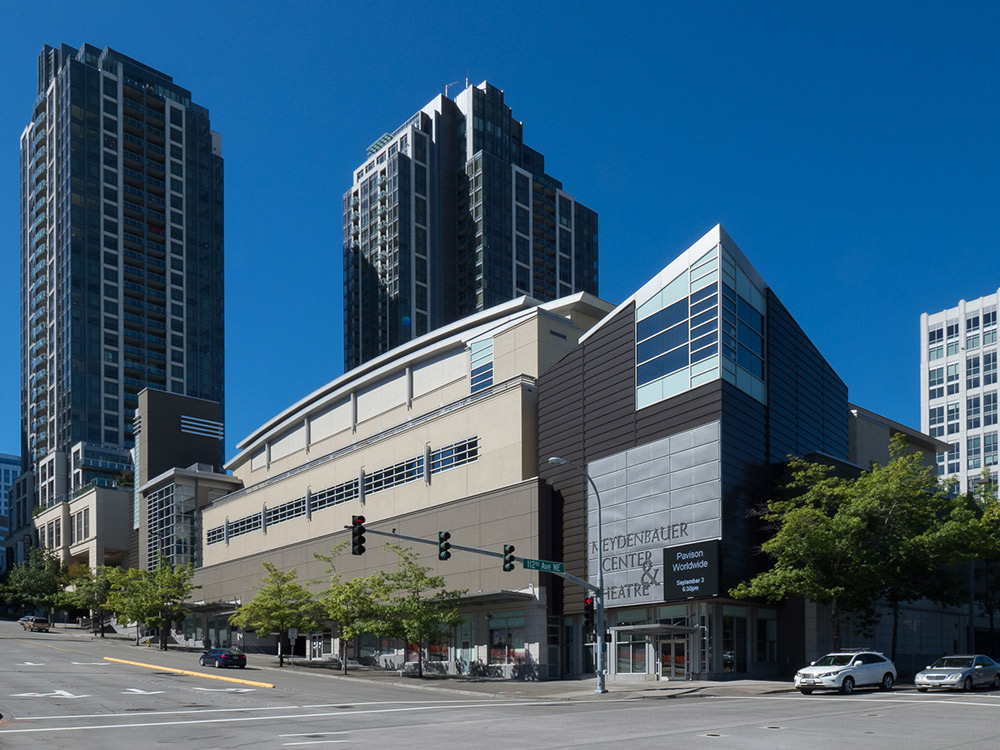

Nearby Cities: Bellevue
As a long-term resident of the Bellevue area, I've always been fond of the locales it has and what it can offer people, even if they're just tourists on their way to Seattle. Bellevue offers much more down-to-earth attractions compared to Seattle or Olympia, along with areas perfect for those who lack access to cars or other form of long-distance transportation. Each area on this list is accessible by city bus.
Places to See
The Bellevue Botanical Garden

Peonies from Bellevue Parks & Community Services
Established within South Bellevue in 1992, the Bellevue Botanical Garden houses dozens of different plant species within its grounds. For those who want to enjoy the wilderness the Pacific Northwest has to offer from the safety of a controlled environment, this is the place. Worth noting is the Yao Garden, a section dedicated to the relationship between Yao Japan and Bellevue, housing numerous Japanese plant species and other flora from East Asia.
Official Website
Bellevue Square Mall

Bellevue Square from Bellevue Downtown Association
Enjoy shopping and walking around Bellevue Square Mall, possessing 1.3 million square feet and dozens of stores for every need you have. Connected to it in the adjacent city blocks are more stores and restaurants, as well as arcades, recreational areas, and theaters.
Some fun facts:
- Bellevue Square Mall was established in 1962 under the title "Bellevue Shopping Square".
- Bellevue Square Mall attracts over 23 million visitors annually.
- Bellevue Square Mall is one of very few malls in America that is owned privately and not by a Real Estate Investment Trust.
Website on the Bellevue Downtown Association
T&T Supermarket

T&T from Seattle Eater and Paolo Bicchieri
Located in Factoria Mall in South Bellevue, T&T serves as the go-to shopping area for Asian food and grocery. At 76,0000 square feet, it's one of the largest stores in Washington, and the largest Asian grocery store in America. Whether you're just grabbing snacks on your trip or restocking your fridge, T&T has products you can't get just anywhere else, imported from all over both East and South Asia.
Official Website
Meydenbauer Center

Meydenbauer from Meydenbauer Center Official Website
Boasting a 36,000 square foot convention center and a 410-seat theater, the Meydenbauer Center serves as an excellent host for conventions and other recreational purposes, with new events going on every day of the month. Be on the lookout for cultural events or fandom meetups, which are hosted here very often.
Website
Event Calendar